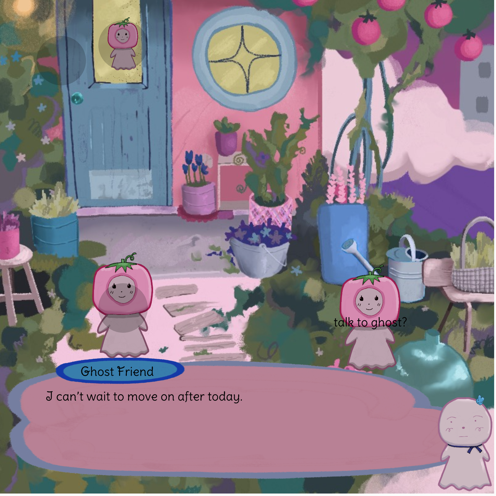
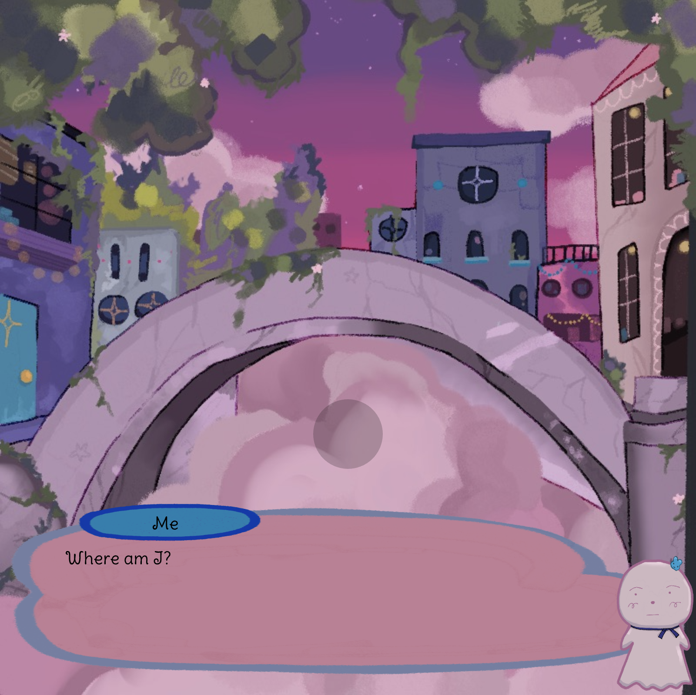
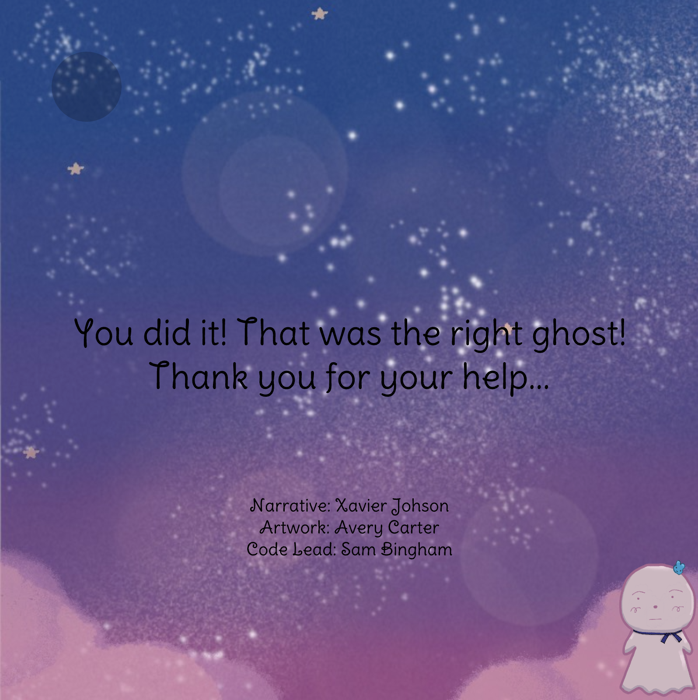

My first intro to game design through code, built in the p5.js web editor, just JavaScript in the browser. It's set in a cloud-themed world where a ghost child is searching for something, and what they're looking for is left pretty ambiguous on purpose. Your choices lead to one of two endings, a good one or a bad one. Xavier and Avery handled the narrative and art while I owned the code.
The hardest part was coding the branching. Decision trees were a new skill for me, and they meant building the game as multiple separate scenes instead of one smooth, continuous one.


